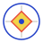

Soggetti
Oggetti del cielo, dimensioni e finestre di osservazione.
IN SVILUPPO
OurSky ANTEPRIMA 0101 ASTROFOTOGRAFIA AMATORIALE
Soggetti celesti, attrezzatura e sessioni di scatto.
Esplora le funzioni02 OURSKY
Catalogo, gear, località e pianificazione. Ogni funzione avrà la propria pagina.
Oggetti del cielo, dimensioni e finestre di osservazione.
IN SVILUPPOTelescopi, camere, filtri e campo di ripresa.
IN SVILUPPOObiettivi, disponibilità e condizioni accettabili.
IN SVILUPPOMappa, orizzonte e qualità del cielo.
IN SVILUPPO03 ARCHITETTURA
Il progetto separa esplorazione del cielo, configurazione del gear, località e pianificazione. La dashboard raccoglierà solo gli estratti utili al profilo.